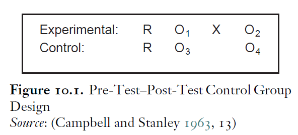
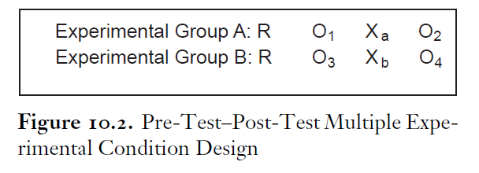
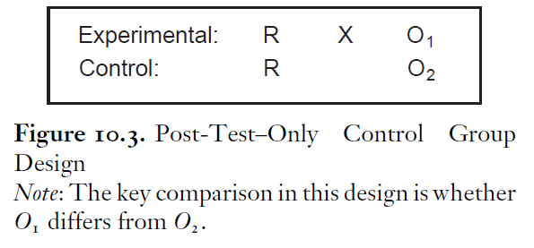
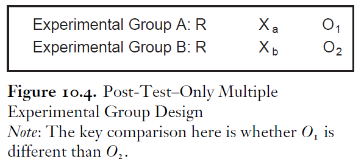

看完还不会做政治学实验你就打我（一）|政治态度及其变迁
收录于合集
#数据可视化 15 个
#政治态度 13 个
#实用技术 19 个
文献来源： Holbrook, Allyson L. “Attitude change experiments in political science.” in Druckman, James N., et al., eds. Cambridge Handbook of Experimental Political Science. Cambridge University Press, 2011.
作者简介： Allyson Holbrook，社会心理学博士，美国伊利诺伊大学芝加哥分校公共行政与心理学副教授、调查研究实验室成员，研究领域聚焦于调查方法（特别是问卷设计）。
近期，政文观止Poliview的推文多次探讨了当代社会科学方法的分类、局限和出路。（社会科学到底有多少种研究方法）其中，实验方法（政治学实验：历史、种类与意义）被许多研究者寄予厚望，也成功引起了各位读者的注意。在读者朋友的建议与推动下，政文观止Poliview特开辟“ 看完还不会做政治学实验你就打我”系列 ，渴望和读者一起真正理解进而积极应用实验方法这把神器。本期，政文观止Poliview将和读者一起学习政治学实验最重要的对象：政治态度及其变迁。
一、 “态度”的概念与测量
“人心是最大的政治”。选民对候选人的看法从何而来？公共政策如何获得更多的支持？不同群体的成员怎样看待彼此？长期以来，人类社会中纷繁复杂的政治态度持续吸引着政治（学）家和普通民众的注意力。然而，“态度”这一概念似乎无所不包而又难以测量。目前学界最主流的观点将“态度”定义为“一种通过评估实体进而表达出某种程度的喜爱或厌恶的心理倾向”。可见，任何态度都需要明确的指向对象，包括人物、地点、观念、事物、经验、行为等等。与此同时，态度应当表现出个体针对对象的某种积极或消极的评价。早期的研究认为，政治态度是稳定的，并且先于思想和行为。但最新的成果表明，个体对于某些议题很可能并没有既定的态度或者态度的强度很弱，因此态度是可以根据给出的信息而实时构建的。在截面数据中，人们对于政治态度的研究往往停留在某一时间点上。但在实验中，研究者关注的重点则是实验处理前后的态度变化。事实上，态度变化包括新态度的形成（无态度→有态度）和既有态度的改变（态度→态度+）。实验者可以通过观察个体的态度在处理（通常是给出信息刺激）前后的差异来计算态度变化，也可以通过更复杂的模型来研究不同的刺激是否导致的不同态度，进而计算出刺激与态度变化之间的函数。
一般认为，态度是一种“内在”而“主观”的概念，因此目前尚未有“完美”的概念操作化方式。一种最简单的方法会直接询问被试者是否喜欢实验中给出的对象，从而记录下被试态度的方向和强度。这种方法的问题在于被试者并不总是乐意诚实地表达自己的态度，甚至会受到“社会期望”的严重影响。另一种方法则要求被试在给定的选项中做出选择（譬如从对立的公共政策中挑选与自己想法相近的方案），从而间接地测定被试的偏好。这种方法可以很好地减轻被试在回答问题时的心理负担，同时避免过多的“无回答”。然而，由于实验者给出的选项总是有限的，而被试则被迫在比较中做出决策，因此被试的真实态度很可能在权衡中失真。最后一种方法则是通过政治行为来反推政治态度，也即要求被试者回溯（“您是否做过…”）或预测（“您会不会做…”）自己的政治行为。这种方法使得政治态度的测量更接近日常的政治生活，然而对政治行为的测量又带来了更多的可能的偏误。
目前，对于政治态度测量的最近进展主要集中在列表实验（List Experiment）方面。研究者通过分半比较平均数的方法可以在一定程度上克服态度测量的偏误。但这一成果无法直接应用于单独样本的测量。另一方面，越来越多的研究者开始尝试关注和解决“无回答”偏误，从而校正态度测量的结果。
二、观察性的政治态度研究
一般认为，实验室实验可以在最大的程度上控制变量，因此可以得出最强的因果关系。然而，并非所有关注政治态度的研究者都可以方便地进行实验研究。作为折衷办法，下列的定量研究方法可以在一定程度上达成“准实验”的目的。但这些简便的方法都有其代价。
首先，最为普遍的做法就是相关性研究 。研究者通过假设检验的方式发现政治态度的相关变量，从而声称找到了某种政治态度的原因。譬如，研究者可能会发现，个体阅读报纸的频率和其支持伊拉克战争的态度之间存在负相关，因此得出“读报导致反战”的结论。 这种研究方法的最大问题，就是无法克服将相关性强行上升为因果关系的严重谬误。因此，作者实际证明的结果和其声称得出的结论相距甚远，内部效度十分堪忧。
其次，部分学者尝试通过大规模的重复调查来模拟实验中的“前测”和“后测”环节。 在这种范式中，研究者倾向于假定，在重复调查期间自然发生的重大事件（譬如公开的政治辩论）会导致两次测量中政治态度在样本均值上的变化。 然而，强行将态度变迁归因于某一重大事件的做法直接违背了历史的复杂性，因此这些结论往往很难获得广泛认可。另一方面，大规模的重复测量使得问卷调查的成本成倍增加，是一种性价比较低的研究方法。
再次，还有学者尝试借助所谓的“自然实验”。 在自然发生的重大事件后，研究者会刻意挑选一些受到事件影响的个体和一些未受影响的个体组成样本，再通过他们之间政治态度均值的比较来估算该事件对政治态度的影响效应。 然而，这些样本并不满足随机分组的要求，因为个体是否受到政治事件的影响很可能是其自我选择的结果。因此，这种“自然实验”会面临严重的代表性问题。
最后，纵向数据研究被一些学者视为在很大程度上类似实验研究的方法。 研究者对于相同的个体进行追踪研究，尽可能地分离出其在不同时间点上的政治态度及政治态度在时间段内发生变化的原因。在“交叉滞后”设计的帮助下，研究者可以在一定程度上根据“时序”来明确相关关系中何为因，何为果。 遗憾地是，这种方法成本极高且样本损耗极大，而且会由于对样本过于密集的研究而使得样本本身脱离真实的政治生活。
三、政治态度变化的实验设计
显然，上述的“准实验”研究都无法精确地分离出真正的因果关系，因此政治学实验受到了越来越多政治态度研究者的推崇。 实验的成立有赖于两大核心假设：首先，研究中的自变量是能够被操纵的的；这种被人为操作的变化被称为“处理”或“刺激”（譬如被试是否得到了特定的信息）。其次，被试或参与者被随机地分配进入不同的情境，在最简单地情况下会被分为“控制组”（未受到刺激）和“实验组”（受到刺激）两个部分。
政治态度类的实验主要包括两种范式： 1. 前测-刺激-后测 ； 2. 刺激-后测 。在第一种范式中，实验者会在刺激前分别测量控制组和实验组的某种政治态度。随后，实验者对给予实验组特定的信息刺激（观看视频、阅读文字、收听广播等等）。最后，实验者会再次这两组被试的政治态度。在这种范式下，因果推论的成立有赖于刺激前后两组各自的政治态度之间的差值是否具有差异。当然，第一种范式可以稍加改进从而完成更复杂的因果推论。实验者可以将不同的刺激施加于不同的组别，而非将控制组“留白”。如果不同的刺激造成了不同组别前侧后测之间的不同差异，那么因果推断就得以成立。
在第二种范式中，实验者需要首先证明或假定实验组与控制组本身在某项政治态度上没有显著的差异。随后，实验者直接给予实验组信息刺激，再分别测量控制组与实验组的政治态度情况。如果这两个后测数据间存在显著差异，那么实验刺激就产生了某种处理效应。同样的，控制组的“留白”也可以替换为不同的刺激，从而比较不同的处理效应。
   
值得注意的是，实验研究虽然给予了研究者更精确的因果关系，但其自身也存在着不可忽视的缺陷。 实验研究，尤其是实验室实验，几乎不可能采用概率抽样样本。 而大多数研究者会倾向于召集大学生作为被试。在这种情况下，研究者很难保证实验中观察到的因果关系同样会出现在其他样本乃至总体中。另一方面， 实验中使用的信息刺激往往是人为设计的，实验室的环境也和日常的政治生活差异明显。 因此，实验室中发生故事也许并不能迁移到实验室外。因此， 实验研究虽然保证了内部效度，但其外部效度（尤其是生态学效度）总是备受争议。
那么，实验研究和非概率抽样的外部效度到底如何保障，又如何证明呢？别急，满20赞写下一期。
*** 特别感谢中国人民大学“政治传播与政治心理”读书会，有意加入的同学可通过邮件联系luyizhou@ruc.edu.cn
编译：陆屹洲
编辑：吴温泉
审读：杨端程


“广告点一点，也是支持学术公益 ”
”
政文观止
微信扫一扫赞赏作者 __赞赏
已喜欢，对作者说句悄悄话
取消 __
发送给作者
发送
最多40字，当前共字
上一页 1/3 下一页
长按二维码向我转账
受苹果公司新规定影响，微信 iOS 版的赞赏功能被关闭，可通过二维码转账支持公众号。